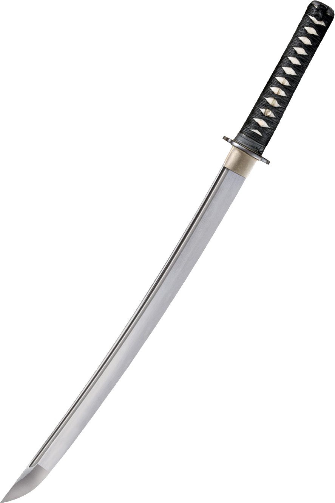
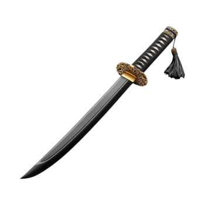
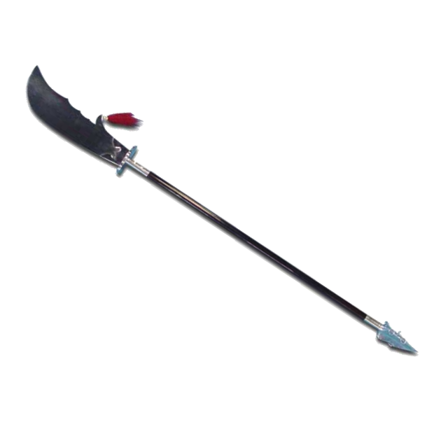
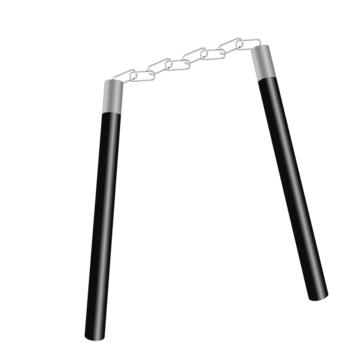
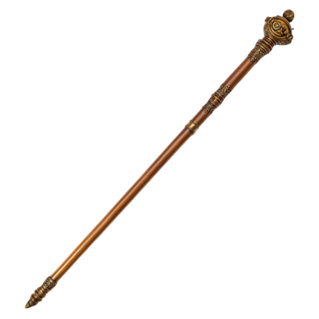
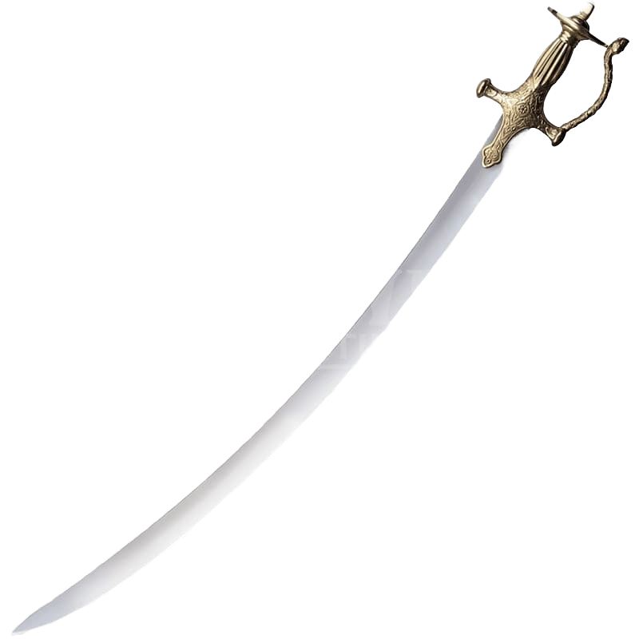
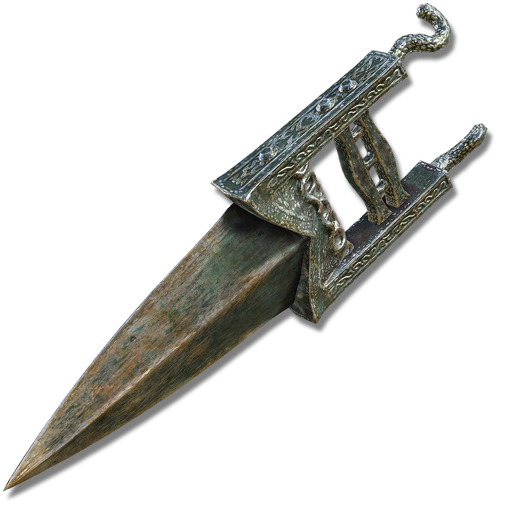
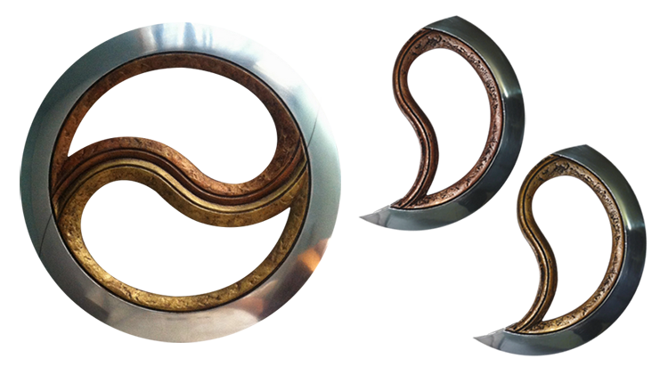

Catálogo (Oriental)
As principais armas de combate corpo a corpo das civilizações orientais.

Katana
Espada curva de um fio, símbolo da classe samurai. Forjada em aço tamahagane com processo de dobramento que combina dureza e flexibilidade.

Naginata
A naginata é uma alabarda japonesa de haste longa (cerca de 2 metros), originária do período Nara (século VIII), usada por monges guerreiros (sōhei), samurais e onna-bugeisha (guerreiras). Eficaz contra cavalaria, popularizou-se nos períodos Heian e Kamakura, mas entrou em desuso no século XIV.

Tanto
O tantô é uma adaga japonesa curta (15-30 cm), arma secundária dos samurais para combates corpo a corpo ou espaços restritos, introduzida no período Heian. Associada ao tantojutsu, era usada para perfurações letais e autodefesa, com lâmina de aço damasco.

Guan Dao
O nome Guan Dao é uma homenagem ao o General Guan Yu (160–219), uma figura histórica real, também escrito como um personagem do épico chinês "Os Três Reinos", de autoria de Luo Guanzhong no século XIV.

Nunchaku
O nunchaku é uma arma tradicional de artes marciais composta por dois bastões curtos conectados por uma corda ou corrente curta. Também conhecido como bastão de caratê, provavelmente vindo da mesma origem que a tonfa, o nunchaku é frequentemente explicado como uma ferramenta antiga usada por fazendeiros para separar o arroz.

Bastão Bô
Chamado de "pai de todas as armas" no kung fu Shaolin, mede cerca de 1,8-2 metros, com extremidade mais grossa na base para melhor equilíbrio e manuseio. Originário de ferramentas agrícolas chinesas antigas, evoluiu para arma de monastérios Shaolin e estilos como Choy Lay Fut.

Talwar
A talwar é um sabre curvo tradicional do subcontinente indiano, amplamente usado por guerreiros como sikhs, rajputs e mughals. Possui lâmina curva moderada (70-90 cm), mais larga na ponta para cortes potentes, com guarda em disco integral de ferro (indo-muçulmana), quillons e pomo achatado que pressiona o pulso em uso intensivo. Possui empunhadura ergonômica para uma mão e ligada por resina forte.

Katar
Adaga de empunhadura em H com lâmina dupla reta e perfurante, símbolo dos Rajput, projetada para penetrar armaduras.

Chakram
O chakram é uma arma de arremesso indiana circular, com borda afiada externa, usada historicamente por guerreiros sikhs e rajputs. Derivado do sânscrito "chakra" (roda), aparece em épicos como Mahabharata (século V a.C.) como arma divina de Vishnu.